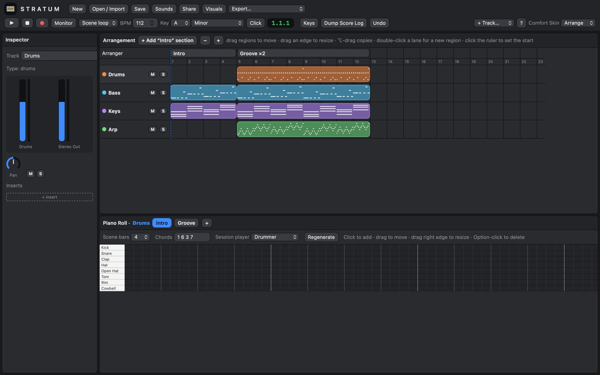
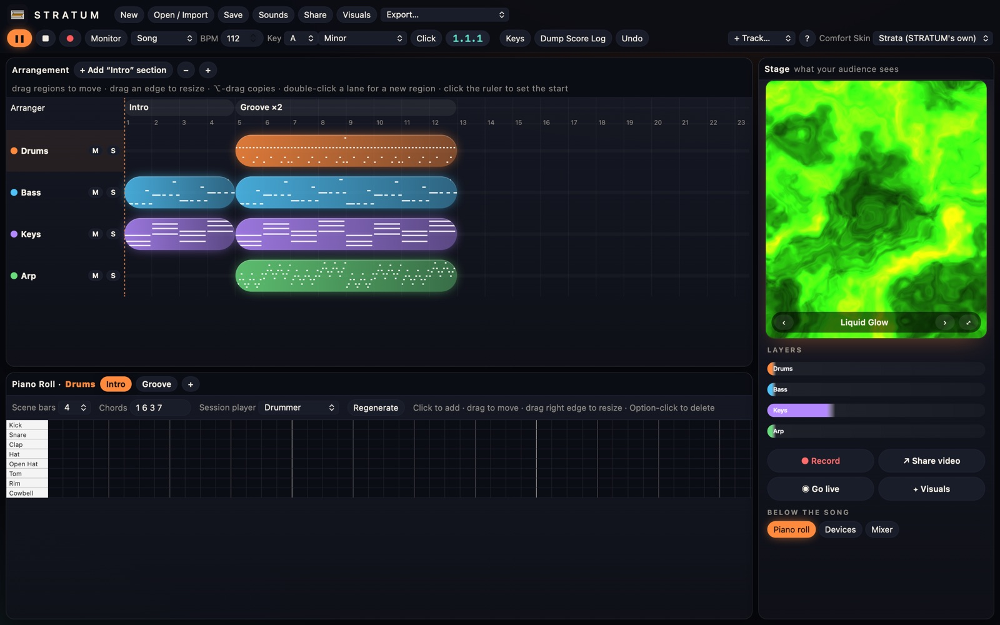
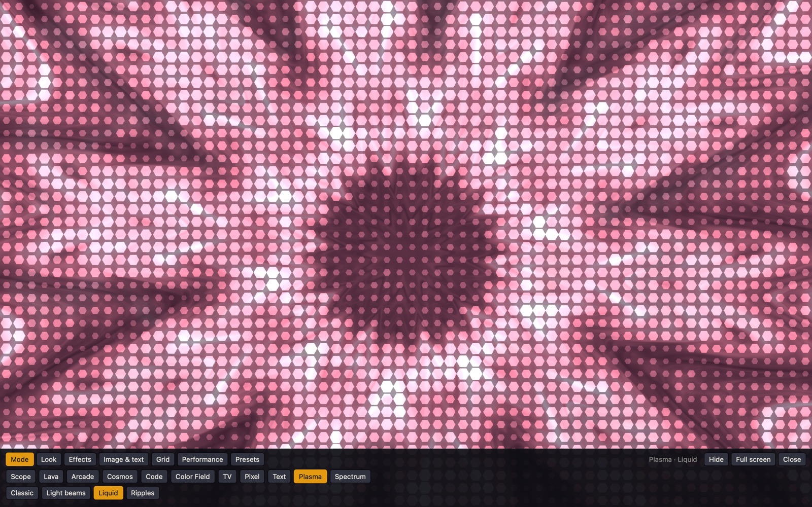
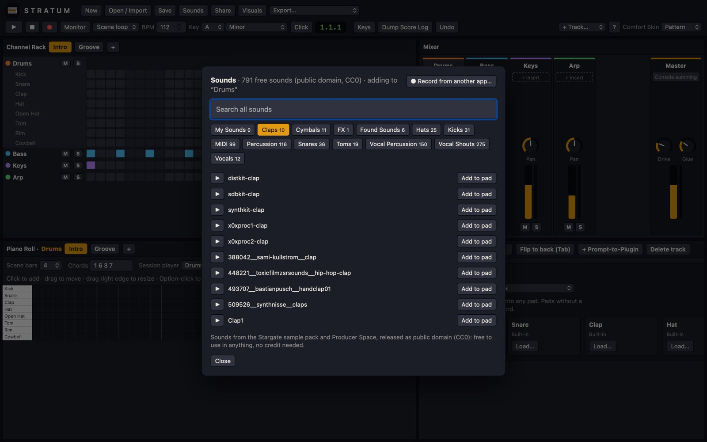

STRATUM is a free music production app for Mac, Windows, iPhone, iPad and Android. Start a beat on your laptop, finish it on your phone, and open the projects you already made in FL Studio, Ableton Live, Logic Pro or Reason. STRATUM is one music studio on every device, with visuals, live streaming and stem separation built in.

Four layouts, called Comfort Skins, feel like the studios you already know, and switching between them never stops the music. The fifth, Strata, is STRATUM's own: your song as glowing layers beside a live Stage showing what your audience will see.

44 audio-reactive modes, 24 palettes, your own image and lyrics, grids of up to 36 tiles and a performance mode. Turn any beat into a full-screen show, a video or a live stream background.

Branded vertical videos for TikTok, Reels and Shorts, drawn frame by frame at full 1080×1920 with clean sound. On a Mac they take about a third of the song's length to make.
Stream to Twitch, YouTube, Instagram or TikTok straight from STRATUM: your screen or your Visuals, a camera box, and the sound of your session. No OBS needed.
AI stem separation pulls drums, bass, vocals and everything else apart, right on your computer (Windows, or a Mac with Apple silicon). Sample, flip and remix without leaving the app.
VST3 and VST2 on Mac and Windows, Audio Units on Mac, each in its own window. Plus STRATUM Wave, STRATUM Tune and all 508 Airwindows effects, free.
Add a whole drum library or sample pack once and it's there in every project, sorted into kicks, snares and hats. 791 free sounds and 99 MIDI kits come built in.
A beat is a single file that opens the same on Mac, Windows, phone and tablet. Save it to iCloud, OneDrive or Google Drive and pick up where you left off.
Open a project from another studio and STRATUM rebuilds it: tracks, notes, tempo, arrangement, audio clips and your own samples.

Traditional studios were built for one computer in one room. STRATUM is built for making music anywhere and getting it in front of people.
| STRATUM | A typical desktop studio | |
|---|---|---|
| Price | Free during the alpha | Often a paid licence or subscription |
| Devices | Mac, Windows, iPhone, iPad, Android and the browser | Usually desktop only, or a separate mobile app |
| Opening other studios' projects | FL Studio, Ableton Live, Logic Pro, Reason, MIDI, DAWproject | Usually its own format, plus MIDI and audio |
| Layouts | Five, switchable mid-song, including Strata | One |
| Audio-reactive visuals | Built in, 44 modes | Separate software |
| Share video for TikTok, Reels and Shorts | One click, 1080×1920 | Export, then edit in a video app |
| Live streaming | Built in, with camera and Visuals | Needs OBS or similar |
| Stem separation | Built in, runs on your computer | Paid add-on, a separate app or a website |
STRATUM is alpha software, so expect rough edges. FL Studio, Ableton Live, Logic Pro and Reason are trademarks of their owners; STRATUM isn't affiliated with them.
Alpha v10.9, released October 28, 2026. Downloads are for members of the STRATUM Discord, where producers share beats, get help, report bugs and hear about new versions first.
So we can see you're in the server. We only see your name and server list, and we never post anything.
Sign in with DiscordNot you? Sign out
STRATUM is a free music production app, also called a digital audio workstation or DAW, for Mac, Windows, iPhone, iPad and Android. You can make beats, record, mix, turn songs into videos and stream live from one app. It is made by Matova LC and is free during the alpha.
Yes. STRATUM is free during the alpha for everyone in the Discord. Paid extras may come later.
STRATUM isn't signed with an Apple Developer ID or a Windows code-signing certificate yet, so macOS and Windows show a warning the first time. On a Mac, open it once, then go to System Settings › Privacy & Security and choose Open Anyway. On Windows, choose More info › Run anyway. Signing is on the way.
Tracks, notes, tempo, arrangement, audio and your own samples come across. Each studio's own built-in instruments and effects can't be copied, so those parts play on STRATUM's sounds, or on the same plugin if you have it installed. Bouncing a track to audio before you export always brings it across exactly.
Yes. Open the web version on an iPhone, iPad or Android device and add it to your home screen. It runs full screen and works offline. Plugins, stem separation and live streaming are on the Mac and Windows versions.
STRATUM opens FL Studio, Ableton Live, Logic Pro and Reason projects, plus MIDI and DAWproject files.
Yes. STRATUM runs VST3 and VST2 plugins on Mac and Windows, and Audio Units on Mac.
Yes. The Mac and Windows apps stream straight to Twitch, YouTube, Instagram or TikTok.
STRATUM is made by Matova LC. Join the community on Discord to get help, report bugs and hear about new versions first.
STRATUM is new and changing every week. Expect bugs, and tell us about them in the Discord. Every release lists what was tested and what wasn't.